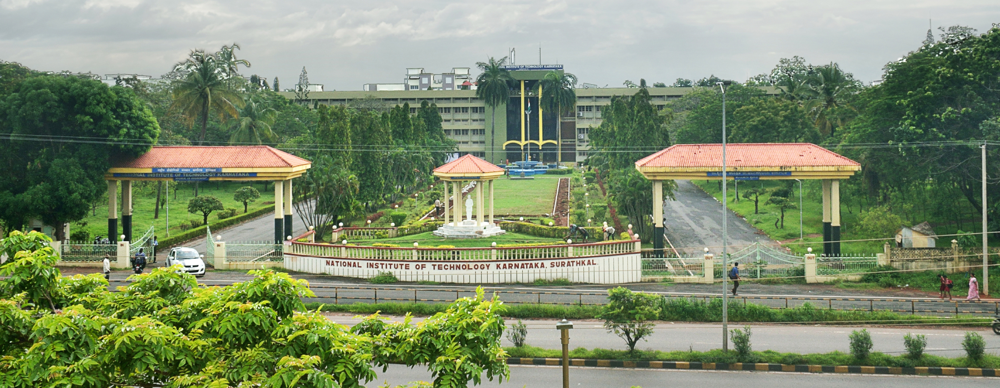
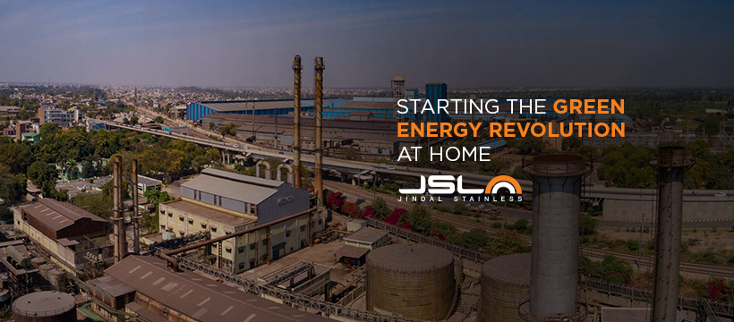
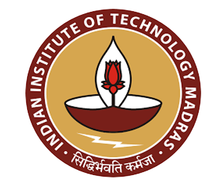
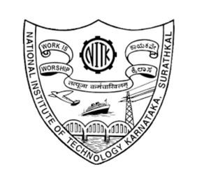

Design and Construction of Stainless Steel Structures 2024
6th June, 2024 (Thursday) 9 AM to 5:30 PM Venue: ICSR Auditorium, IIT Madras,
Chennai

National Institute of Technology Karnataka, Surathkal
Indian Institute of Technology Madras, Chennai

Jindal Stainless Limited
INDIAN INSTITUTE OF TECHNOLOGY, MADRAS

Standing tall as a premier institute of national importance, the Indian Institute of Technology
Madras (IIT Madras) has
carved a remarkable niche in the landscape of Indian engineering education and research. Established in 1956
with
collaboration from the German government, IIT Madras has blossomed into a powerhouse of technical
excellence.
Its impact on the nation's engineering field is undeniable. IIT Madras fosters a vibrant environment for
learning and
innovation, producing generations of highly skilled engineers who have gone on to shape various sectors.
From
contributing to India's space program and advancements in nuclear energy to spearheading developments in
infrastructure,
communication technologies, and sustainable solutions, IIT Madras alumni have been instrumental in
propelling the
nation's engineering prowess.
Beyond academics, IIT Madras actively engages in research collaborations with industries and institutions,
tackling
real-world challenges and developing solutions that benefit society. This institute fosters an
entrepreneurial spirit,
nurturing startups that offer innovative products and services.
In conclusion, IIT Madras stands as a beacon of engineering excellence in India. Its commitment to
education, research,
and innovation has not only produced top-notch engineers but also significantly contributed to the nation's
technological advancement and progress.
NATIONAL INSTITUTE OF TECHNOLOGY, KARNATAKA

Nestled on the scenic coast of Karnataka, the National Institute of Technology Karnataka (NITK),
formerly known as
Karnataka Regional Engineering College (KREC), has established itself as a prominent institution in India's
technical
education landscape. Founded in 1960, NITK boasts a rich legacy of nurturing exceptional engineers who have
left their
mark on various industries.
NITK's contribution to the nation's engineering excellence is multifaceted. The institute provides a
rigorous academic
curriculum across various engineering disciplines, preparing students to become well-rounded professionals.
Its strong
focus on research fosters innovation and problem-solving skills, leading to advancements in crucial areas.
NITK alumni
have played a vital role in shaping India's infrastructure development, contributing to the construction of
bridges,
dams, and power plants. They have also been instrumental in the growth of core sectors like manufacturing
and aerospace,
propelling India's technological capabilities.
Furthermore, NITK actively collaborates with industries, fostering knowledge transfer and ensuring its
curriculum
remains relevant to contemporary needs. The institute's emphasis on entrepreneurship empowers students to
translate
their ideas into viable solutions, further contributing to the nation's technological ecosystem.
In essence, NITK, Suratkal serves as a vital engine for engineering excellence in India. Through its
commitment to
quality education, cutting-edge research, and industry engagement, the institute has empowered generations
of engineers
who are driving the nation's technological progress and shaping its future.
JINDAL STAINLESS LIMITED
India’s leading stainless steel manufacturer, Jindal Stainless, has an annual turnover of INR
35,700 crore (USD 4.30
billion) in FY23, and has 3 million tonnes of annual melt capacity. It has seven stainless steel
manufacturing and
processing facilities in India and abroad, including in Spain and Indonesia, and a worldwide network in 15
countries. In
India, there are ten sales offices and six service centres. The company’s product range includes stainless
steel slabs,
blooms, coils, plates, sheets, precision strips, wire rods, rebars, blade steel and coin blanks.
Integrated operations have given Jindal Stainless the edge in cost competitiveness and operational
efficiency, making it
one of the world’s top stainless steel players. Founded in 1970, Jindal Stainless continues to be inspired
by a vision
for innovation and enriching lives and is committed to social responsibility. The company boasts an
excellent workforce,
value-driven business operations, customer centricity and the best safety practices in the industry.
Jindal Stainless
remains committed to a greener, sustainable future, fuelled by environmental responsibility. The company
manufactures
stainless steel using scrap in an electric arc furnace, the least greenhouse gas emission route since it
enables 100%
recyclability with no reduction in quality, thereby achieving a circular economy. The company aims to reduce
carbon
emission intensity by 50% well before FY 2035 and achieve Net Zero by 2050.
COORDINATOR
Dr. J Vijaya Vengdesh Kumar,
Assistant Professor,
Department of Civil Engineering,
National Institute of Technology Karnataka,
Surathkal, Mangalore – 575 025
Email: vj@nitk.edu.in
CO-COORDINATOR
Dr. S Arul Jayachandran,
Professor,
Department of Civil Engineering,
Indian Institute of Technology Madras,
Chennai – 600 036
Email: aruls@civil.iitm.ac.in
TECHNICAL SUPPORT
1. Er. Rosemary Francis – Research Scholar, NITK Surathkal
2. Er. Amoke Shabhari S K R – Research Scholar, NITK Surathkal
3. Er. Fathimath Thasreefa PI – Research Scholar, NITK Surathkal
WEBSITE SUPPORT
1. Mr. Aditya Hegde– IV year, BTech IT, NITK Surathkal
2. Er. Sushant Hegde – II year, MTech Structural Engineering, NITK Surathkal